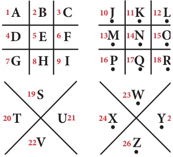
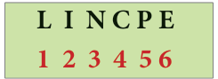

- Fill in the blanks (Use Atbash Cipher that is given in code 3)
- G Z N R O \(=\) \(\underline{\qquad\qquad\qquad\qquad}\)
- V M T O R H S \(=\) \(\underline{\qquad\qquad\qquad\qquad}\)
- N Z G S V N Z G R X H \(=\) \(\underline{\qquad\qquad\qquad\qquad}\)
- H X R V M X V \(=\) \(\underline{\qquad\qquad\qquad\qquad}\)
- H L X R Z O H X R V M X V \(=\) \(\underline{\qquad\qquad\qquad\qquad}\)
- Match the following (\(a = 00 \ldots\ldots\ldots\ldots Z = 25\)).

- mathematics - (a) 18 20 01 19 17 00 02 19 08 14 13
- addition - (b) 03 08 21 08 18 08 14 13
- subtraction - (c) 12 00 19 07 04 12 0019 08 02 18
- multiplication - (d) 00 03 03 08 19 08 14 13
- division - (e) 12 20 11 19 08 15 11 15 02 00 19 08 14 13
- Frame Additive cipher table (key \(= 4\)).
- A message like “Good Morning” written in reverse would instead be “Doog Gninrom”. In the same way decode the sentence given below:
“Ot dnatsrednu taht scitamehtam nac eb decneirepxe erehwreve ni erutan dna laer efil.”
- Decode the given Pigpen Cipher text and compare your answer to get the Activity 3 result.

I. The room number in which the treasure took place:
II. Place of the treasure :
III. The name of the treasure :
- Praveen recently got the registration number for his new two-wheeler. Here, the number is given in the form of mirror-image. Encode the image and find the correct registration number of praveen's two-wheeler.

Objective Type Questions
- In questions (i) and (ii), there are four groups of letters in each set. Three of these sets are alike in some way while one is different. Find the one which is different.
(i). (A) C R D T (B) A P B Q (C) E U F V (D) G W H X
(ii). (A) H K N Q (B) I L O R (C) J M P S (D) A D G J
- A group of letters are given. A numerical code has been given to each letter. These letters have to be unscrambled into a meaningful word. Find out the code for the word so formed from the 4 answers given.

(A) 2 3 4 1 5 6 (B) 5 6 3 4 2 1 (C) 6 1 3 5 2 4 (D) 4 2 1 3 5 6
- Questions (iii) and (iv) are based on code language. Find the correct answer from the four alternatives given.
(iii) In a certain code, ‘M E D I C I N E’ is coded as ‘E O J D J E F M’, then how is ‘C O M P U T E R’ written in the same code ?
(A) C N P R V U F Q (B) C M N Q T U D R
(C) R F U V Q N P C (D) R N V F T U D Q
(iv) If the word ‘P H O N E’ is coded as ‘S K R Q H’, how will ‘R A D I O’ be coded ?
(A) S C G N H (B) V R G N G (C) U D G L R (D) S D H K Q